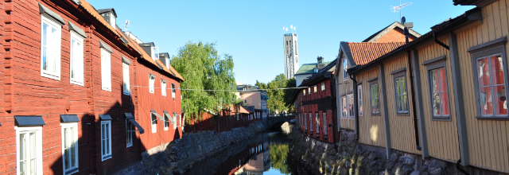

IEEE ISORC 2022 PROGRAM COMMITTEE
| Gabor Karsai | Vanderbilt University, USA |
| Martin Schoeberl | Technical University of Denmark, Denmark |
| Andreas Polze | Hasso Plattner Institute, Univ. Potsdam, Germany |
| Aniruddha Gokhale | Vanderbilt University, ISA |
| Peter Puschner | Vienna University of Technology, Austria |
| Lars Bauer | Karlsruhe Institute of Technology (KIT), Germany |
| Sibin Mohan | University of Illinois at Urbana-Champaign, USA |
| Peter Ulbrich | Friedrich-Alexander-Universitat Erlangen-Numberg, Germany |
| Daniel Lohmann | Leibniz University of Hannover, Germany |
| Luca Abeni | Scuola Superiore Sant'Anna - Pisa, Italy |
| Marisol Garcia-Valls | Universitat Pollitecnica de Valencia, Spain |
| Paulo Pedreiras | University of Aveiro, Portugal |
| Michal Sojka | Czech Technical University of Prague, Czech |
| Daniel Casini | Scuola Superiore Sant'Anna - Pisa, Italy |
| Subhajit Sidhanta | Indian Institute of Technology - Bhilai, India |
| Mathias Pacher | Goethe-University of Frankfurt, Germany |
| Hoon Sung Chwa | DGIST, South Korea |
| Fanxin Kong | Syracuse University, USA |
| Selma Saidi | Technische Universitat Dortmund, Germany |
| Saad Mubeen | Mälardalen University - Västerås, Sweden |
| Sotiris Moschoyiannis | University of Surrey, UK |
| Luis Miguel Pinho | Polytechnic Institute of Porto, Portugal |
| Sebastian Altmeyer | Universitat Augsburg, Germany |
| Mo Sha | Knight Foundation School of Computing and Information Sciences, Florida International University, USA |
| Arne Hamann | Robert Bosch GmbH |
| Dakai Zhu | University of Texas at San Antonio, USA |
| Reinder J. Bril | TU Eindhoven The Netherlands |
| Mohammad Ashjaei | Mälardalen University - Västerås, Sweden |
| Alessandro Papadopoulos | Mälardalen University - Västerås, Sweden |
| Mikael Sjödin | Mälardalen University - Västerås, Sweden |
| Matthias Becker | KTH Royal Institute of Technology, Sweden |
| Luis Almeida | University of Porto, Portugal |
| Paulo Garcia | Carleton University, Ottawa, Ontario, Canada |
| Marc Boyer | The French aerospace lab |
| Gaetano Patti | University of Catania |
| Nicolas Navet | University of Luxembourg |
| Filip Markovic | Mälardalen University - Västerås, Sweden |
| Patrick Denzler | TU Wien, Austria |
| Tianyu Zhang | The Hong Kong Polytechnic University |
| Jinghao Sun | Dalian University of Technology, China |
| Wei Zhang | The Hong Kong Polytechnic University |